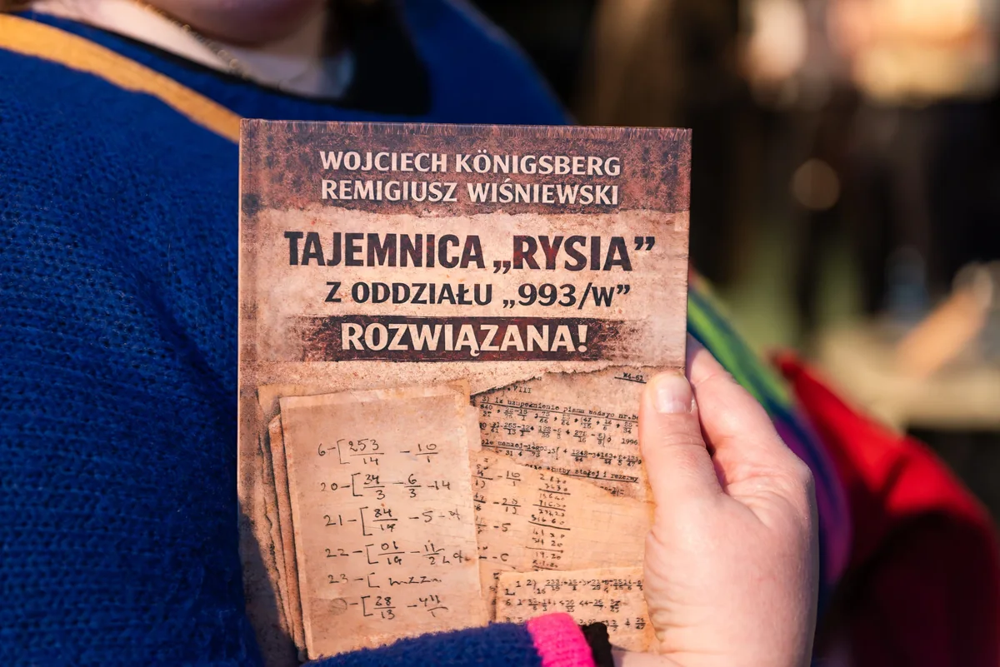
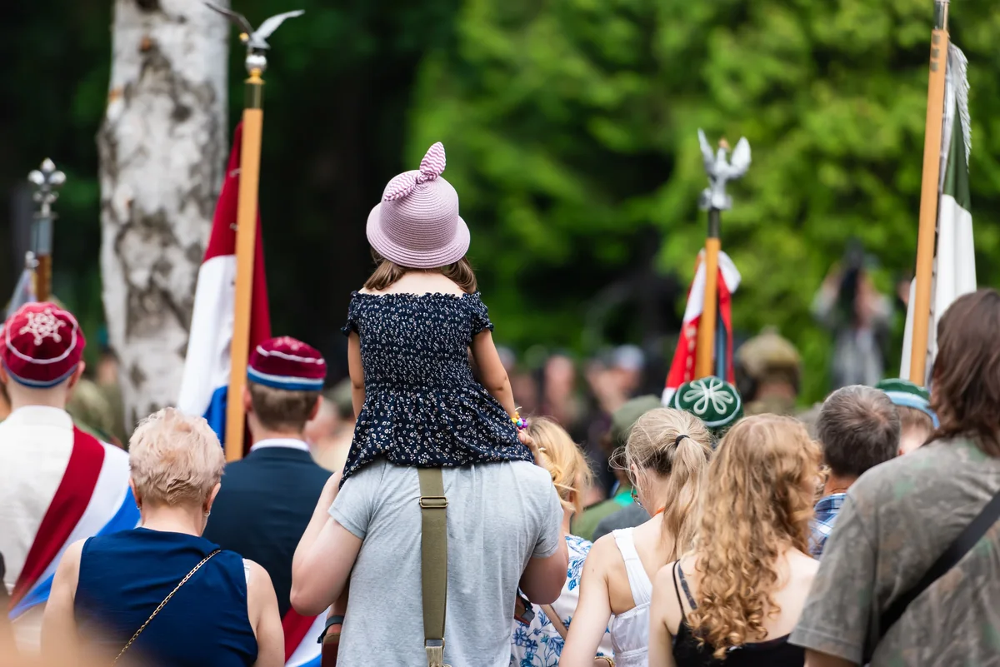

Zachować
Chronimy pamięć o ludziach, wydarzeniach i dorobku minionych pokoleń.
FUNDACJA PRZESZŁOŚĆ JUTRA
Historia, kultura i dziedzictwo wymagają nie tylko pamięci, ale również konkretnych działań. Twoje wsparcie pozwala nam dokumentować przeszłość, upowszechniać wiedzę i realizować projekty, które przywracają pamięć o ludziach i wydarzeniach.
NASZA MISJA
Nie chcemy, aby historia pozostawała wyłącznie w archiwach, książkach i opracowaniach. Zależy nam na tym, aby wiedza o przeszłości była dostępna, zrozumiała i obecna w życiu społecznym.
Chronimy pamięć o ludziach, wydarzeniach i dorobku minionych pokoleń.
Pokazujemy, jak przeszłość wpływa na współczesny świat. Upowszechniamy wiedzę.
Tworzymy projekty, które angażują ludzi, łączą środowiska i przybliżają historię.
RAZEM MOŻEMY WIĘCEJ
Nie każda forma pomocy musi oznaczać wpłatę pieniędzy. Liczą się również wiedza, doświadczenie i zaangażowanie.
Pomóż nam realizować projekty historyczne i kulturalne.
PRZEKAŻ DAROWIZNĘ ↗Przekaż materiały, sprzęt lub inne potrzebne zasoby.
OFERUJĘ WSPARCIE ↗Podziel się swoimi kompetencjami i doświadczeniem.
DOŁĄCZ DO DZIAŁAŃ ↗Pomóż nam docierać do nowych odbiorców.
POZNAJ PROJEKTY ↗NASZE PROJEKTY
Każdy projekt to praca nad zachowaniem pamięci, upowszechnianiem wiedzy i przywracaniem znaczenia historii.

01 / WSPARCIE TWÓRCÓW
Książka Wojciecha Königsberga i prof. Remigiusza Wiśniewskiego przywraca pamięć o Janie Nowickim „Rysiu”.
Poznaj projekt ↗
02 / DOKUMENTACJA HISTORII
Dokumentujemy szlak bojowy, popularyzujemy historię Powstania Warszawskiego i uczestniczymy w obchodach.
Poznaj projekt ↗
03 / UPAMIĘTNIENIE LUDZI I WYDARZEŃ
Upamiętniamy Jana Nowickiego „Rysia” i łączniczkę „Halinkę”, których miejsca pochówku pozostają nieznane.
Poznaj projekt ↗TWOJE WSPARCIE
Nie wszystkie ważne inicjatywy można zamknąć w ramach jednego projektu. Stałe wsparcie pomaga nam planować kolejne działania, rozwijać działalność fundacji i wykorzystywać pojawiające się możliwości.
Twoja darowizna może wspierać zarówno konkretne przedsięwzięcia, jak i realizację celów statutowych.
PRZEKAŻ DAROWIZNĘPROSTO I BEZPIECZNIE
Darowiznę możesz przekazać przelewem na rachunek fundacji.
DANE DO PRZELEWU
✓ Numer rachunku skopiowany
Dziękujemy za każde wsparcie naszej działalności. Dzięki zaangażowaniu darczyńców możemy rozwijać inicjatywy związane z historią, kulturą i dziedzictwem.
NIE TYLKO PIENIĄDZE
Fundacja rozwija się dzięki ludziom, którzy chcą angażować się w działania na rzecz historii i dziedzictwa.
Możesz pomóc poprzez: